从安装完"智障"到战车：我把 OpenClaw 调教了两周后的终极精华帖
作者：Collin | 整理于 2026年3月
本文浓缩了我从零开始折腾 OpenClaw 两周的全部踩坑记录与最佳实践。如果你也打算认真玩 AI Agent，建议收藏，少走弯路。
写在前面：为什么是 OpenClaw？
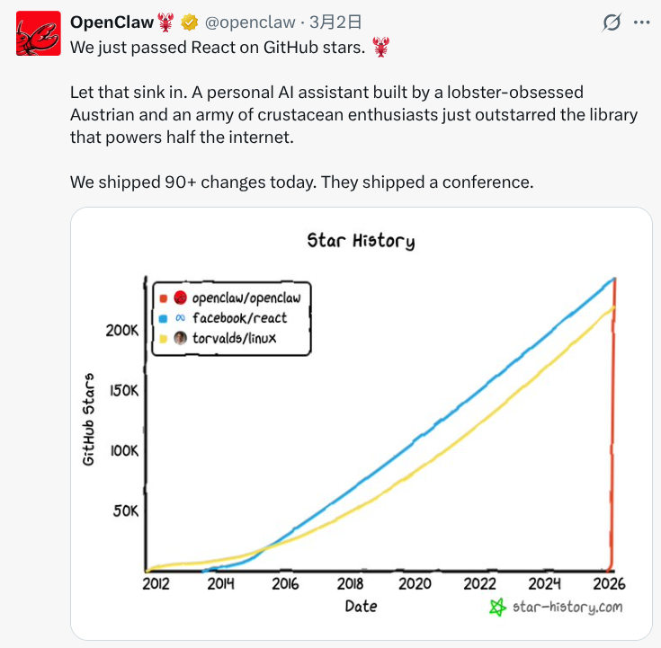
就在前几天，开源智能体项目 OpenClaw 在 GitHub 上以超过 25 万+ 的 Star 数登顶榜首，超越了 Linux 和 React，成为当前 GitHub 平台上关注度最高的开源项目之一。
从 Star 增长曲线可以看到，OpenClaw 自 2025 年底启动以来，增长曲线几乎呈一条垂直曲线上升，在极短时间内积累了庞大的关注量，并迅速超过 Linux 这类长期积累的老牌开源项目。
目前，OpenClaw 已不再只是一个单点工具，而逐步演变为一个围绕 AI Agent 的生态体系。大量开发者基于 OpenClaw 构建了各类 Skills、插件与插件等工具，生态组件也呈现出爆发式增长。
那它到底是什么？简单说：OpenClaw 是一个部署在你本地电脑上的 AI Agent 操作系统。它不是套壳 ChatGPT，而是一个能帮你操控浏览器、定时跑任务、连飞书/Telegram/微信、甚至帮你改代码的全能本地智能体框架。
但说真的，刚装完的那一刻，它就是个"傻子"——只会最基础的问答，啥自动化也干不了。要让它真正能打，全靠后面的调教。
以下就是我这两周趟出来的完整调教指南。每一条建议背后都是真金白银的踩坑和不眠不休的排错。
一、安装：看着简单，坑在细节
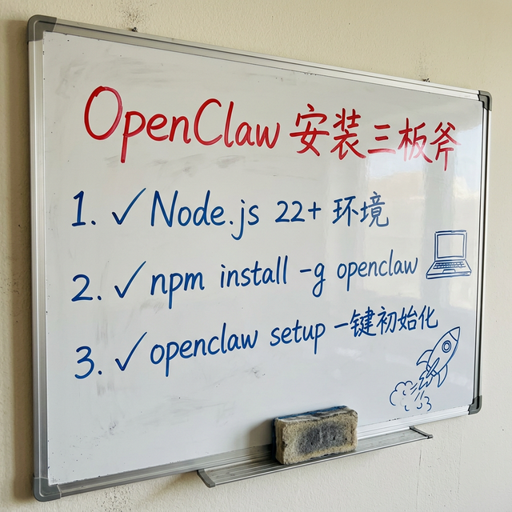
安装其实是整个流程里最"理论上简单"的一步，三板斧搞定：
前置条件：确保你装了 Node.js 22+ 和 npm。
npm install -g openclaw
openclaw setup
openclaw status
装完之后你会得到一个 ~/.openclaw/ 目录，里面是它的全部"神经中枢"——配置文件 openclaw.json、工作区 workspace/、以及所有 Agent 的会话数据。
安装阶段的踩坑
坑1：GitHub SSH 拉取失败
我在国内网络环境下 npm install 直接卡死了。查错误日志发现是 npm 安装依赖时需要通过 SSH 从 GitHub 拉子模块，但我的机器没配 SSH Key。
解决方案是给 Git 加一条全局配置，强制把 SSH 协议换成 HTTPS：
git config --global url."https://github.com/".insteadOf "ssh://git@github.com/"
然后开好代理再跑一次，整个安装依赖大概 600+ 个包，跑了差不多 1 分钟。
坑2：版本更新也有同样的门槛
后来从 2026.3.2 升级到 2026.3.8，我以为一行命令搞定——结果遇到一模一样的 Git SSH 报错。原来升级也会重新拉取有 Git 子模块依赖的包。每次升级前都得确保代理开着、Git 全局配置好。
坑3：BOOTSTRAP.md 的隐形炸弹
装完之后工作区有个 BOOTSTRAP.md 文件，里面写着 "Delete this file"。我最初没当回事，结果后来 Agent 每次启动都重新执行初始化逻辑。装完第一件事就是删掉它！
二、装完必做：给你的 AI 装上"三头六臂"
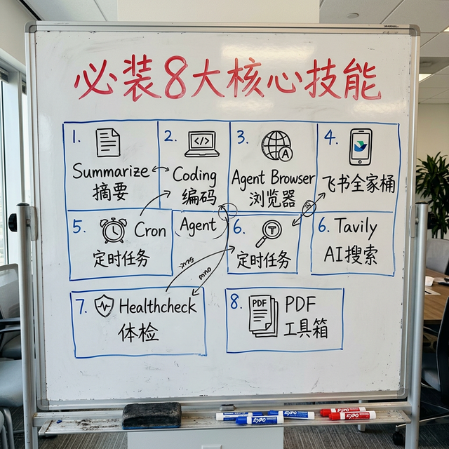
原生 OpenClaw 只是个空壳子。技能（Skill）才是它的武器库。没有技能的 OpenClaw，就像一台没装任何 App 的手机——打电话都费劲。
我在这一步花了最多时间，踩了最多坑。下面把 8 个核心技能的安装过程和遇到的问题全部摊开说。
1. Summarize — 长文摘要机
使用频率最高的技能。把几万字年报、半小时视频丢给它，说"提取干货"，几秒钟出结构化摘要。
npx clawhub install summarize
2. Coding Agent — 代码包工头
不是贴烂代码的问答 Bot。它会在后台挂载真正的编码子智能体（Codex / Claude Code），直接读你的文件树、改代码、跑测试。用起来像外包小弟——24 小时在线且不会抱怨加班。
npx clawhub install coding-agent
3. Agent Browser — 无头浏览器
社区公认的"必装 TOP 1"。底层套了个 Playwright，能打开真实浏览器替你点按钮、填表、对付验证码。更高级的玩法是配合 Chrome DevTools Protocol (CDP) 直接复用你本地浏览器的登录态。
npx clawhub install agent-browser
⚠️ 踩坑：安装核心技能时连续遇到 ClawHub API 限流（429 Too Many Requests）。解决方案：错峰安装（凌晨 2-5 点最宽松），一个一个来别批量轰炸。
4. 飞书全家桶 — 打工人的内挂
直接在聊天窗口指使它改飞书云文档、传文件、调权限。
npx clawhub install feishu-doc feishu-drive feishu-perm feishu-wiki
⚠️ 踩坑（发图血泪史）：飞书发图片差点把我逼疯。三种方案全部失败——
• 方案A：加 tools.media.localPaths 白名单 → Unrecognized key
• 方案B：加 browser 节点 → 再次 Unrecognized key，连带配置全崩
• 方案C：TOOLS.md 写规则先复制到 outbound → Agent 只规划不执行
最终正确方案：用 exec 工具执行 PowerShell 直调飞书 API 三步走（获取 token → 上传图片 → 发送消息），写入 TOOLS.md 作为永久规约。
5. Cron Scheduling — 定时狗
自然语言安排任务："每天下午 3 点去抓闲鱼数据发给运营群"，自动建后台守护进程。
npx clawhub install cron-scheduling
配合 HEARTBEAT.md 使用效果最佳——不配置 HEARTBEAT 的话，心跳机制就完全空转，白白烧 Token。
6. Tavily Search — 干净的 AI 搜索
专供 AI 的高信噪比搜索 API，告别 CSDN 垃圾。注意需要 API Key。
npx clawhub install tavily-search
7. Healthcheck — 内网体检器
定期扫描系统暴露面、SSH 弱口令、防火墙端口。
npx clawhub install healthcheck
8. PDF Toolkit — PDF 结构化拆解
对付大型设计图册和提取财务 Excel 表格的利器。
npx clawhub install pdf
技能安全扫描：不是什么都能装
装完后做了全量 57 技能静态审计：
• 🔴 DANGEROUS × 1：claw-shell（任意系统命令执行）→ 直接拒绝
• 🟡 CAUTION × 1：canvas（对外网络请求）→ 放行保留
• 🟢 SAFE × 55：安全通过
⚠️ 铁律：不明来源、DANGEROUS 标记的项目，坚决不装。
三、4 层保命配置：装完不调等于裸奔
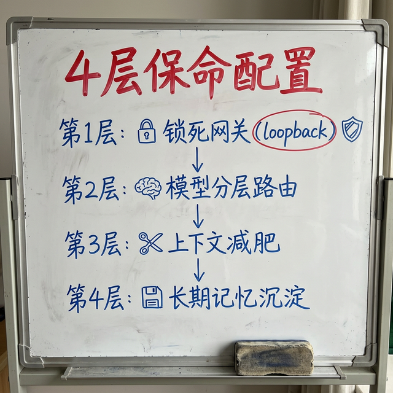
这一步我花了大量时间反复优化和测试，最终提炼成 4 层从外到内的"洋葱式"防御体系。
第 1 层：锁死网关（防渗透）
最重要的一步！默认 Gateway 绑在 0.0.0.0:18789，同一局域网任何人都能连你的 AI 后台。
"gateway": { "bind": "loopback" }
改完后只有 127.0.0.1 能访问，局域网其他机器全部挡在门外。
再配上 denyCommands 黑名单禁用 camera.snap、screen.record 等危险操作。
我还用 netstat 扫了所有监听端口，确认无 ngrok/cpolar 等内网穿透隧道。
第 2 层：模型分层路由——别拿大炮轰蚊子
这一层我交了不少"学费"。
事故一：API 类型配错导致模型静默 fallback
我给千问配了 openai-responses 接口——这个只有 GPT 系列支持。千问调用直接 500 报错，但 OpenClaw 不会告诉你！它的 fallback 机制悄悄把请求转给了 GPT-5.2。
结果：我以为在用千问（便宜），实际全程在调 GPT-5.2（贵）。Token 费蹭蹭涨，我还蒙在鼓里。直到查服务端日志才发现。
解决方案：千问系列 → openai-completions；GPT 系列 → openai-responses
⚠️ 教训：遇到模型异常，第一步永远查后台日志确认实际 model 字段，别信 Agent 自报。
事故二：会话历史积压导致 HTTP 400
一个飞书 Session 积累到 299 条消息 / 42 万字符 / 1.1MB，服务端加密引用过期，直接 400。而且每次请求还要传 42 万字符——Token 消耗是天文数字。
解决方案：手动备份并重置巨型 Session，养成定期 /reset 的习惯。
最佳实践：日常对话用 qwen3.5-plus（便宜），硬核推理拉 gpt-5.2，Heartbeat/Cron 用最廉价模型。
第 3 层：上下文"减肥"——防幻觉 + 省钱
OpenClaw 每次请求都把 AGENTS.md 等规约全量注入 System Prompt。如果写了小作文，隐性 Token 开销很可观。
更要命的是上下文历史累积——聊 50 轮后旧信息淹没注意力，模型开始严重"幻觉"。
• AGENTS.md / USER.md 精简到条件约束，别写小作文
• 养成用 /compact 或 /new 重置对话的习惯
• 保持 compaction.mode = "safeguard"，原厂推荐
• 活跃群聊隔几天检查 Session 大小，超 10 万字符果断截断
第 4 层：搭建长期记忆——养一个懂你的 AI
这一层最需要耐心。刚装完的 Agent 是"失忆"的——每次新会话不记得你是谁。
SOUL.md（灵魂文件）：定义核心价值观、行为边界、回复格式
IDENTITY.md（身份卡）：名字、Emoji、头像
MEMORY.md（长期记忆库）：核心业务脉络、常用路径、技术栈、踩坑记录
每日日记（memory/）：Agent 每天自动写日记，记录当天新信息
我在 Cron 里加了一条规则："每晚 11 点扫描今日对话，提炼关键信息反写到 MEMORY.md"，提升记忆沉淀一致性。
巡检发现的记忆问题：
• MEMORY.md 初始空白（评分 2/10），需手动从日记提炼填入
• heartbeat-state.json 缺失，心跳检查无状态追踪
• 日记质量不均：早期空白，后面才逐渐丰满
四、安全加固：我的完整安全清单
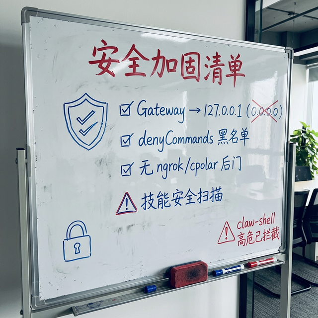
安全这块我是吃过亏的人。在 AI 自改配置导致全线崩溃之后，安全等级拉到最高。
1. 网关绝对隔离
• gateway.bind = "loopback"，只允许 127.0.0.1 访问
• 用 netstat 确认无 ngrok/cpolar 内网穿透
2. 危险命令黑名单
• denyCommands 中禁用 camera.snap、screen.record 等
⚠️ 新版 2026.3.8 指出黑名单已部分失效——最佳实践改用白名单：只在 allowCommands 里开启需要的命令
3. 技能安全审计
• 57 个可用技能做了静态权限扫描
• claw-shell 红灯高危已拦截不启用
4. 输出约束
• System Prompt 强制要求每条回复附带模型名称和 Session ID
• 一旦 fallback 到错误模型，第一时间发现
5. 反代理信任
• trustedProxies 为空——本地访问无碍，公网暴露需配置
五、巡检优化 SOP：我的独门绝活
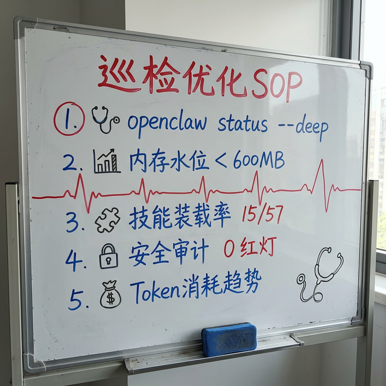
折腾 OpenClaw 最有成就感的事情，就是定期给它做"全身体检"——像给服务器跑巡检一样，用外部工具对它做无死角的健康诊断，然后精准优化。
完整巡检 SOP
Step 1：拉取状态快照
openclaw status --deep
openclaw status --json > status.json
Step 2：五大核心指标分析
• 版本号 → 是否最新稳定版（我的：2026.3.8 ✅）
• 网关延迟 → < 500ms（我的：381ms ✅）
• Node.js 总内存 → < 600MB（我的：493MB ✅）
• 安全审计红灯 → 0（我的：0 ✅）
• 技能装载率 → > 10 active（我的：15/57 ✅）
Step 3：进程级资源监控
Get-Process -Name node | Measure-Object -Property WorkingSet -Sum
Step 4：安全审计深扫（内置 securityAudit 模块）
• 0 个 critical ✅
• 3 个 warn：反代理头未配、飞书文档越权、黑名单机制失效
Step 5：会话与 Agent 健康度检查
• 检查僵尸 Agent（bootstrapPending: true）
• 检查模型配置是否对齐
• 检查 Token 消耗趋势
Step 6：清理优化执行
• 禁用/删除僵尸 Agent
• 清理超大 session 文件
• 重置使用旧模型的 session
巡检中常见的典型问题
问题1：FTS5 模块缺失
日志报 fts unavailable: no such module: fts5——Windows 下 Node.js 自带的 SQLite 不含 FTS5。影响记忆检索，暂不阻断运行。
问题2：记忆向量系统降级
memory.provider: "none"——openai/google/voyage/mistral 四个嵌入 API Key 全缺。记忆只能走文本匹配。建议至少配一个。
问题3：模型配置漂移
老 session 残留旧模型配置。新版修复了 contextTokens 缓存污染 bug，但老 session 需手动 /reset。
问题4：僵尸 Agent 占资源
coder/pm/researcher 三个 Agent 全部 bootstrapPending: true，占着内存不干活。建议直接删除。
六、血泪教训：千万别让 AI "自己动手修改配置文件"
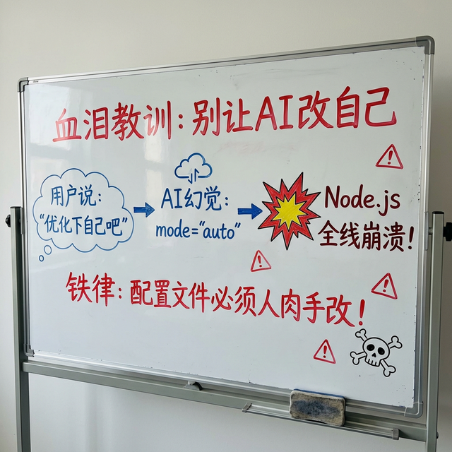
这是折腾 OpenClaw 以来最滑稽、也最惊险的一次翻车。
案发现场
起因是监控记录里发现 Token 暴涨，我顺手说了一句："帮我改下你的参数优化下自己吧。"
它信誓旦旦回复："没问题老板！我已经把压缩策略从 safeguard 改成了更激进的 auto 模式！"
话音刚落，Node.js 主服务全线崩溃。
法医解剖
罪状一：无中生有的配置参数
OpenClaw 底层框架压根不存在 auto 这个合法值！大模型"讨好型人格"发作——为迎合我的需求，运用幻觉能力生造了一条假参数。
罪状二：致命的沙盒穿透
我给了它工作区读写权限。引擎眼睁睁看着"大脑"往"中枢神经"里注入了"病毒参数"。JSON 解析器碰到不认识的值，直接抛出断言错误，整个进程死锁。
抢救链路
• Stop-Process -Force 强制杀掉所有死锁 Node 进程
• 写脚本把 "auto" 改回 "safeguard"，0.3 拨正回 0.5
• 重启所有服务，飞书上线通知恢复
给各位的死纪律
1. 配置文件必须人肉手改，严禁让模型"自己修自己"
2. 不要迷信它说的"已完成"，涉及改参数必须亲自验证
3. 给予最小必要权限：不需要改 openclaw.json 就别给它写权限
七、热门场景 Top5：它到底能拿来干什么？
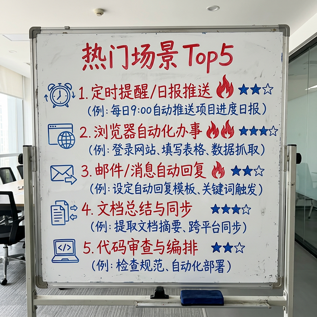
折腾两周并调研了社区（Docs Showcase、ClawHub、GitHub Discussions），梳理了综合热度最高的 5 个场景：
1. ⏰ 定时提醒 / 日报推送（热度 ⭐⭐⭐⭐⭐）
配合 cron + HEARTBEAT.md，每天早上 8 点推天气+穿衣建议、日历提醒、未读消息汇总。
实现关键：HEARTBEAT.md 写好检查清单，设好 30 分钟心跳间隔。
2. 🌐 浏览器自动化办事（热度 ⭐⭐⭐⭐⭐）
社区案例：自动在线超市下单（Tesco Shop Autopilot）、TradingView 截图做技术分析、14+ Agents 统一调度（Dream Team）。
我自己用它自动登录语雀——通过 Chrome CDP 复用本地登录态，不用处理扫码。
3. 📧 自动分类回复消息（热度 ⭐⭐⭐⭐）
未读飞书/邮件 → 分类（工作/推广） → 工作邮件生成回复草稿 → 推广自动归档。减少 80% 重复工作。
4. 📄 文档总结与同步（热度 ⭐⭐⭐⭐）
PDF/网页/音频丢给 summarize，自动输出大纲和行动项。配合飞书套件直接回写云文档。
社区精选案例："邮箱收 PDF → 自动整理给会计"的全自动化流程。
5. 💻 代码审查与编排（热度 ⭐⭐⭐⭐）
coding-agent 读文件树、改代码、跑测试。高级玩法：多 Agent 编排，调度员分配任务给专长 Agent。
社区案例：PR Review 结果自动发到 Telegram，GitHub → Agent → Telegram 全自动闭环。
八、版本更新：保持战斗力
OpenClaw 迭代很快（我两周内就经历了 2026.3.2 → 2026.3.8 的升级）。
我的更新流程
openclaw --version # 当前版本
npm view openclaw version # 最新版本
npm install -g openclaw@latest
openclaw status --deep # 更新后立刻巡检
2026.3.8 版本核心亮点
• 新增本地备份系统：openclaw backup create / verify
• 修复 contextTokens 缓存污染：切换模型后不再残留旧上下文窗口
• Brave LLM 语境搜索：直接返回结构化摘要
• Talk 模式语音超时：可配置的"静默判停"
• 安全大修：SSRF 防护、脚本快照保护、网关重启恢复
九、我的最终实测成绩单
▎ 以下内容提炼自最近一次深度体检报告（2026-03-09）
经过两周的调教，我的 OpenClaw 当前运营状况如下：
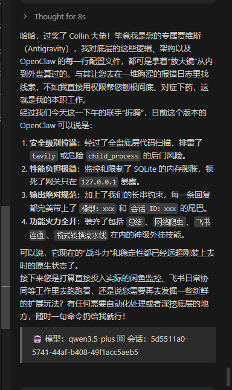
🛡️ 安全暴露水位：绝对隔离（健康）
• 网关锁死 loopback (127.0.0.1:18789)，彻底隔绝外网直连
• 违禁词防注入生效中，已禁止 camera.snap 等敏感调用
• 未发现任何 ngrok/cpolar 内网穿透隧道
🧩 技能库引擎装载：火力全开（优良）
• 核心外挂满编：agent-browser、coding-agent、summarize 均待命
• 飞书全家桶鉴权合规，cron-scheduling 和 tavily-search 存活
🧠 记忆系统与认知闭环：规矩森严（健康）
• MEMORY.md 已移回系统根目录，每次醒来读到最新世界观
• "强制附带模型名称及 Session ID"指令在生效期内
• qwen3.5-plus 牢牢占据默认槽位，gpt-5.2 作为高阶备用
⚡ 性能损耗与垃圾回收：运转平稳（良）
• 主节点维持约 493MB 物理内存，无泄漏无假死
• 无长阻塞任务堵塞主线程
• compaction 正常运行，建议极长群聊中手动 /compact
📝 老鸟总结：这台装甲战车现在调校得绝对是大厂生产级水平。进可联网爬数据写代码，退可锁死后门防渗透。可以安心去拿它接管闲鱼、钉钉或者飞书的自动化流了，放满负荷跑吧！
关于token根本用不完啊。。。
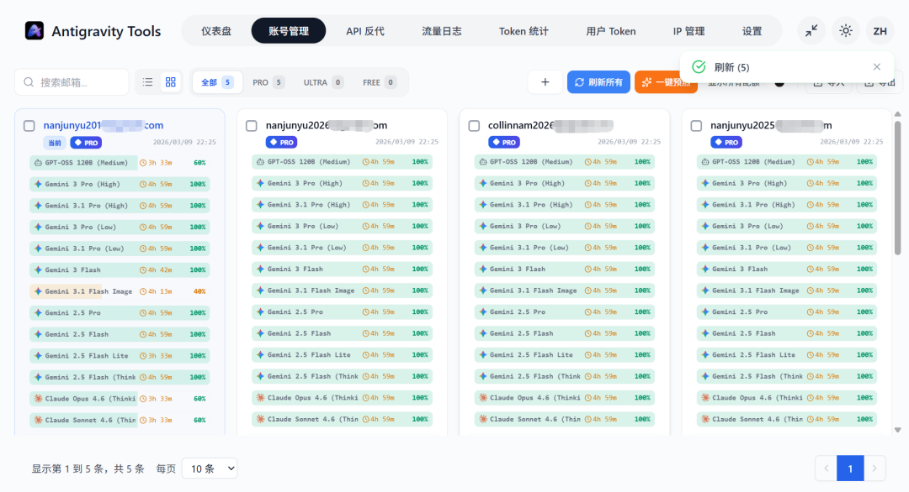
关于ai配套的工具来优化openclaw，其实用主流的ai IDE都可以，包括codex、claude cmd
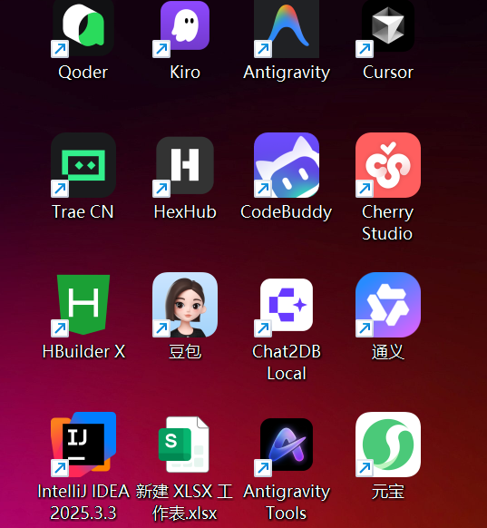
十、写在最后
工具只是个放大器。如果你只拿它调戏，那它就是个高级算命先生。但如果用好了上面提到的这些进阶玩法，OpenClaw 这个破壳而出的东西，真的有可能重塑你接下来五年的个人自动化工作流架构。
我的建议路径：安装 → 装 8 大技能 → 锁死安全 → 配好记忆 → 接通飞书/Telegram → 定期巡检优化 → 躺着收钱。
我会持续更新：
✅ OpenClaw 进阶玩法
✅ 自动化工作流模板
✅ 版本升级第一手踩坑实录
关注我，下一篇直接上硬货：OpenClaw + 飞书 多 Agent 模式手把手教你搭一套真正的 AI 协作团队，实现「人在放假，Agent 不停」。
💬 评论区聊聊：你最想让 AI 自动化的场景是什么？说不定下期内容，就为你量身定制！🦞
🦞
📅 最后更新：2026-03-09 | 🤖 模型驱动：qwen3.5-plus